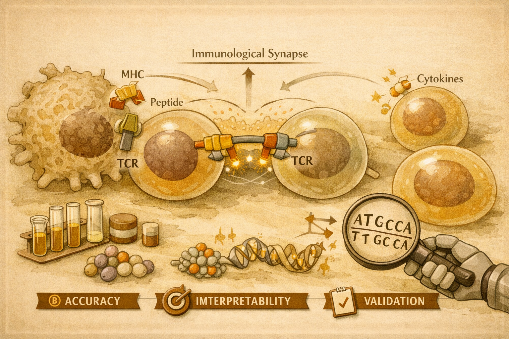

Disordered Protein LAT Encodes Signal Balance in T Cell Activation
A large-scale single-cell mutational screen reveals that the disordered adapter protein LAT tunes T cell signaling balance through distributed functional elements.

When a T cell detects a foreign antigen, it launches a rapid cascade of molecular events. A central coordinator in this process is LAT, the Linker for Activation of T cells, a transmembrane adapter protein whose cytoplasmic tail is largely intrinsically disordered. After T cell receptor activation, LAT is phosphorylated by ZAP-70 and recruits multiple protein partners to coordinate downstream pathways including NFAT and AP-1.
The central puzzle is how a structurally disordered protein can produce precise and balanced signal branching. Traditional biochemical work identified a small set of important tyrosine residues, but a broader sequence-level map of how LAT encodes signaling balance was still missing.
What they did
Rubin et al. developed a pooled single-cell high-content screening strategy to dissect the sequence-function relationship of LAT. They generated a library of LAT mutants, including triple alanine block substitutions across the protein, single and multisite variants, and charge-altering mutations, then introduced them into LAT-knockout Jurkat T cells.
After TCR stimulation, individual cells were profiled at the epigenomic, transcriptomic, and cell-surface protein levels using single-cell genomics. This made it possible to measure the functional consequences of each LAT variant across multiple signaling dimensions in parallel, with key results validated in primary human CD4+ central memory T cells.
Key finding
LAT contains many functional sequence elements distributed across its disordered tail. These elements influence downstream signaling pathways in a coordinated way, suggesting that signal balance is encoded through widespread functional regions rather than a few isolated molecular switches.
Why it matters
This work reframes intrinsically disordered proteins as active encoders of signaling information. For immune biology, it suggests that T cell responses are shaped not only by discrete binding motifs but also by distributed sequence properties such as charge and clustering behavior. That insight could inform future strategies for modulating T cell responses in autoimmunity, cancer immunotherapy, and vaccine design.
The primary screen used Jurkat T cells, a leukemic cell line that does not fully reproduce primary T cell biology. Although selected findings were validated in primary human CD4+ T cells, LAT function may vary across T cell subsets, activation contexts, and cytokine environments.
LAT is not simply a passive docking platform. Its disordered sequence encodes the relative balance of T cell signaling outputs through distributed functional elements.
"The study shows how single-cell multi-omics can turn deep mutational scanning into a functional map of disordered protein signaling."
Disordered protein LAT encodes relative levels of signaling pathways in T cell activation
Authors: Adam J. Rubin, Tyler T. Dao, Lukas M. Altenburger et al.
Journal: Science, Vol. 392, 2026